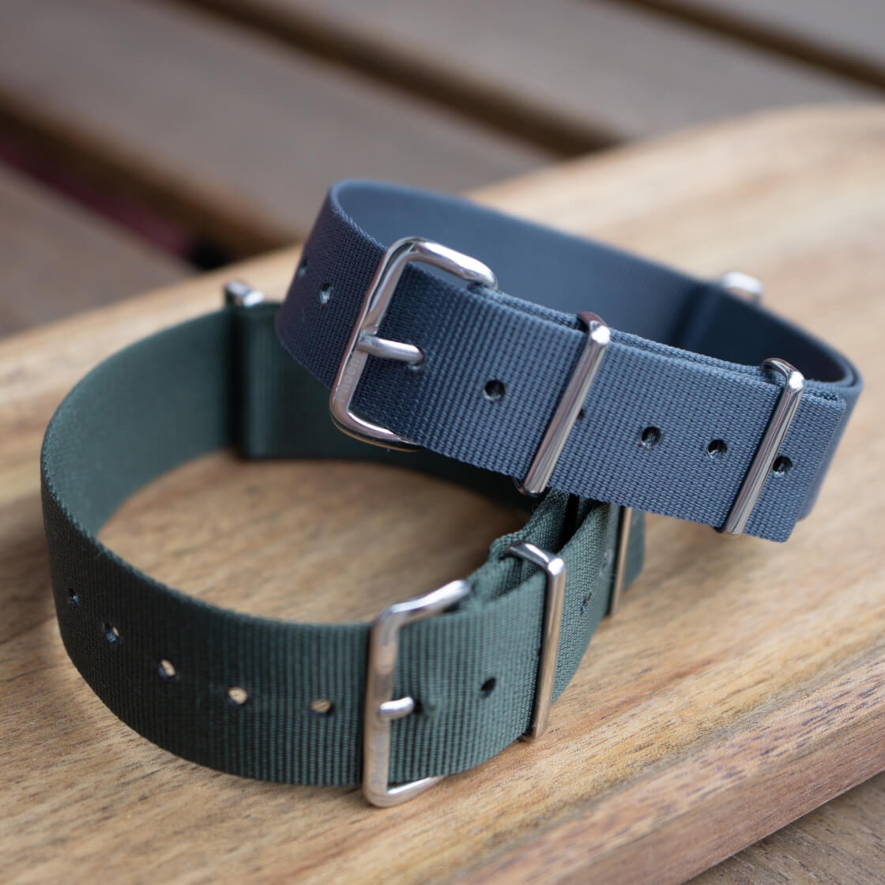

Issued Because It Was Cheap, Sold At Premium Because It's Military
I am looking at a strip of nylon on my desk that a soldier once received for free because it was the cheapest acceptable way to keep a watch attached to a wrist. The version I paid for cost more than some watches. Nothing about the webbing has fundamentally changed in fifty years. What changed is the story I am willing to pay for.
 Nenad Pantelic • April 30, 2026
Nenad Pantelic • April 30, 2026

That gap, between a thing issued because it was cheap and disposable, and the same thing now sold because it's "military", is one of the most obvious tricks in the watch world.
How the cheapest strap got so expensive
I will start with the thing we call a NATO. Purists will correct me: the proper name is the G10. By the way, that name actually tells you everything about the origins of the strap. It comes from the G1098 requisition form a British soldier filled out at the supply store to get one. "NATO" name stuck later, because the strap was assigned a NATO Stock Number in the military cataloguing system. The object was never named for branding. It was named for paperwork.
When the British Ministry of Defence standardised it, the spec was super simple. One width. One colour. Chrome-plated brass hardware. Woven nylon with the ends heat-sealed so they wouldn't fray. The bit that actually is brilliant engineering is the way the strap passes behind the watch, so that if a spring bar fails, the case stays on your wrist, held by the other spring bar. That's it. A fail-safe system for a tool, made to a cheep price, at scale.
The official production was eventually handled by a single firm, Phoenix Straps. The "real deal" military strap, in other words, was a modest industrial product made by a modest industrial company.
Fast forward to today’s strap market, and let's see the evolution of the pass-through strap. It’s a different product now, not only the Phoenix, but in general. The format has climbed upmarket: medium to heavy weave nylon in any color imaginable, laser-cut edges, fully stitched edges in some cases, solid 316L brushed heavy-duty angular hardware instead of stamped hollow buckles... Some of those upgrades are real and worth money. But the thing being sold, over and over, isn't always the upgrade. It's often the word "military". Or defense, or MoD, or mil-spec, or...
The watches did it first
The straps are just following a blueprint the watches created decades earlier.
The classic example is the "Dirty Dozen": twelve field watches the British MoD commissioned near the end of WWII from twelve different Swiss makers, all built to a single demanding spec: chronometer-grade accuracy, water and shock resistance, black dial, luminous numerals, small seconds, a crown usable with gloves.
They were marked W.W.W., for "Watch, Wrist, Waterproof." They were standard-issue equipment produced by the thousands, abused in the field, serviced by army engineers, and later sold off to other armies. Today they're among the most collectible watches on earth.
Same for the Mil-Subs, MN Snowflakes, Breitling Plutons, or IWC Mark series watches.
Why "military" sells so well
I think that there are couple of things happening at once, and they somehow reinforce each other.
My default perception is that these straps (and watches) are authentic. "It was good enough for soldiers" is a shortcut to perceived honesty of design. Nobody chose a field watch or a grey nylon strap to show off.
There is also a provenance we can actually verify. Most lifestyle marketing is invented. Military heritage isn't. There are real contracts, real spec numbers, real defence standards a brand can point to. True history is far more believable than a fabricated origin story.
Then there is something I can label as a tool-watch nostalgia. In an era of smartwatches and over-designed everything, a deliberately spartan object feels principled. The fewer features, the more serious it seems.
And of course the functional alibi I am telling to myself. Military framing lets me justify the purchase on rational grounds. This watch is robust, legible, fail-safe, practical... But what I really buying is the romance of all that. I get to feel sensible and adventurous in the same transaction.
This illustrates how the "Price" element of the 4Ps operates on pure psychology. By leaning into this military association brands aren't just selling "rugged features", but they are trying to shift the customer's perceived value of the product.
Because military specs imply durability, quality, and strict testing, companies naturally default to premium pricing strategy. They know that a higher price tag reinforces the illusion of over-engineered capability.
The $5 question
Here's where it gets uncomfortable and messy.
Take the elastic Marine Nationale strap. It is a woven, slightly stretchy strap based on what French naval divers wore in the '70s. The most celebrated modern maker hand-builds them to your wrist in Spain, dyes the nylon in Switzerland, finishes them beautifully, and charges somewhere around $80. They're genuinely excellent. They're also, functionally, very close to copies you can buy from various marketplaces for a few bucks.
A reviewer I came across put the question: is the original worth twenty times the price of the knock-off? His honest answer was that for the job, holding a watch on your wrist, the answer is no. The cheap one does the same thing. But for a watch he cared about, he still wanted the real one, for the construction, the hand-stitching, the engraved hardware, and yes, the story.
That's the whole phenomenon. Part of that $80 is real: better elastic, better hardware, made-to-measure fit, a maker who'll stand behind it.
And part of it is a "military heritage tax": the premium you pay purely for the lineage and the romance, on top of what the materials and labour actually cost.
If issued combat kit commands a premium, there's a tier above it where the markup goes fully vertical. Blacked-out dials, coyote-tan everything, moody photography of a watch on a pass-through strap laid next to a passport, a folding knife and a weapon.
This story moves a staggering volume of product. Watches, for sure, but also straps, patches, caps, morale merch, the entire lifestyle. And it's all priced accordingly.
The heritage tax becomes a mystique tax. And a story, unlike a cotton-infused medium weave nylon or solid hardware, costs nothing to manufacture. The same FKM, but with a story, the same supremely nice matte strap, but with a story. The espionage buyer is, with great statistical likelihood sitting at a desk. The strap isn't for the field. It's for the feeling of the field, for the dream that I am too a quiet professional.
Final thoughts
The OG grey Phoenix was issued because it was cheap. The now-$80 strap on my desk looks and feels almost the same, and I knew exactly which part of the price was the strap and which part was the story.
The markup is simply the cost of admission to a dream. But I still do it because in a world of disposable tech I am looking for objects that claim to have a soul, even if that soul was manufactured by a team of product designers in a clean room in the UK, US, Switzerland, or wherever.